Code
library(tidyverse)
df<-read.csv("https://raw.githubusercontent.com/Datamanim/datarepo/main/youtube/youtube.csv")tidyverse 패키지를 이용하여 데이터 전처리는 데이터 분석의 가장 중요한 과정 R 초급자에게 가르쳐주기 위해 만들었습니다.
To learn more about Tidyverse see https://www.tidyverse.org/.
1. 데이터 형식
숫자형(numeric) : num(숫자형), int(정수형), dbl(실수형)
문자형(character) : chr
범주형(factor) : fct
논리형(logical) : logi
결측 (Not Available) : NA
무한대 (Infinite) : Inf
데이터 형식 알아보기 : class(변수명) is.numeric(변수명), is.character(변수명), is.factor(변수명)
데이터 형식 바꾸기 : as.numeric(변수명), as.factor(변수명), as.character(변수명), as.logical(변수명)2. 자주 사용 하는 함수
평균(mean) : mean(변수)
중위수(median) : median(변수)
최대값(max) : max(변수)
최소값(min) : min(변수)
최대-최소(range) : range(변수)
합(sum) : sum(변수)
표준편차(sd) : sd(변수)
분산(var) : var(변수)
절대값(abs) : abs(변수)
반올림(round) : round(변수, 반올림할 소수점 아래수)
제곱근(sqrt) : sqrt(변수)
원소갯수, 문자열길이(length) : length(변수)
행, 열의 수(dim) : dim(df)
프린트(print) : print(변수) / print(“문자”)
조건(ifelse) : ifelse(x>10, “a”, “b”)
중복없이 관측치 종류(unique, distinct) : unique(변수), df %>% distinct(열이름)
문자패턴 찾기(grep, grepl) : grep(“문자”, df):열번호 출력, grepl(“문자”, df):true/false로 출력
문자패턴 찾아 바꾸기(gsub) : gsub(“이전문자”, “새로운 문자”, df)
열갯수(ncol) : ncol(df)
행갯수(nrow) : nrow(df)
열이름(colnames) : colnames(df)
행이름(colnames) : rownames(df)
열합치기(cbind, bind_cols) : cbind(df1, df2) or bind_cols(df1, df2)
행합치기(rbind, bind_rows) : rbind(df1, df2) or bind_rows(df1, df2)
빈도수 구하기(table) : table(변수)
정렬하기(sort) : 내림차순 sort(변수), 오름차순 sort(변수, decreasing = TRUE)
열이름(names, colnames) : names(변수)
최대, 최소위치 찾기(which.max, which.min) : which.max(변수), which.min(변수)3. 연산 기호
"
* (곱하기) : x*2
/ (나누기) : x/2
%/% (나눗셈의 몫) : 16%/%3 = 5
%% (나눗셈의 나머지) : 16%/%3 = 1
== (일치, True or False) : 3==5, False
!= (불일치) : 3!=5, True
& (and) : x > 2 & x < 10
| (or) : x < 2 | x > 10
"4. dplyr 전처리 함수
[참고 자료]https://rstudio.github.io/cheatsheets/html/data-transformation.html
%>% (파이프라인, 왼쪽 데이터프레임을 오른쪽 함수에 넣어라) : df %>% head()
filter (조건에 맞는 행 추출) : df %>% filter(컬럼명 == “a”)
select(특정열 선택) : df %>% select(열번호) / df[, 열번호]
slice(특정행 선택) : df %>% slice(행번호) / df[행번호, ]
mutate(특정열 추가) : df %>% mutate(새로운 열이름 = )
rename(열이름 바꾸기) : df %>% rename(새로운 열이름 = 이전 열이름)
arrange(정렬하기) : 오름차순 : df %>% arrange(열이름), 내림차순 : df %>% arrange(desc(열이름))
group_by(특정열 그룹화), summarise(통계치 계산) :
df %>% group_by(열이름) %>% summarise(평균=mean(열이름))
열합치기(inner_join, full_join, left_join, right_join) : inner_join(df1, df2, by=“name”)
na가 있는 행 제거하기(na.omit) : na.omit(df)
na가 있는 열에서 na 는 제거하고 계산하기 (na.rm=T) : mean(df, na.rm=T)
[출처] 10주차 예상문제 (실기1 유형) (이기적 스터디 카페)
dataurl =https://raw.githubusercontent.com/Datamanim/datarepo/main/youtube/youtube.csv
library(tidyverse)
df<-read.csv("https://raw.githubusercontent.com/Datamanim/datarepo/main/youtube/youtube.csv")#Q1
df%>%
group_by(channelTitle)%>%
summarise(n=n()) |>
arrange(-n) |>
slice(1:10)# A tibble: 10 × 2
channelTitle n
<chr> <int>
1 짤툰 372
2 SPOTV 318
3 파뿌리 318
4 런닝맨 - 스브스 공식 채널 313
5 엠뚜루마뚜루 : MBC 공식 종합 채널 293
6 장삐쭈 283
7 BANGTANTV 275
8 채널 십오야 274
9 이과장 258
10 총몇명 255#Q2
df |>
filter(dislikes>likes) |>
select(channelTitle) |>
distinct() channelTitle
1 핫도그TV
2 ASMR 애정TV
3 하얀트리HayanTree
4 양팡 YangPang
5 철구형 (CHULTUBE)
6 왜냐맨하우스
7 (MUTUBE)와꾸대장봉준
8 오메킴TV
9 육지담
10 MapleStory_KR
11 ROAD FIGHTING CHAMPIONSHIP
12 사나이 김기훈
13 나혼자산다 STUDIO
14 Gen.G esports#Q3
df |>
mutate(요일 = wday(trending_date2, label=T)) |>
filter(요일 == "일") |>
filter(likes> dislikes) |>
group_by(categoryId) |>
summarise(n = n()) |>
arrange(-n) |>
select(1) |>
slice(1)# A tibble: 1 × 1
categoryId
<int>
1 24#Q5
df |>
mutate(요일 = wday(trending_date2, label=T)) |>
select(categoryId, 요일) |>
table() 요일
categoryId 일 월 화 수 목 금 토
1 274 263 257 234 246 243 255
2 99 105 119 129 128 120 119
10 830 837 894 917 890 833 776
15 217 215 208 207 207 187 198
17 636 668 708 706 682 633 592
19 91 92 89 85 92 90 87
20 289 298 285 291 282 283 296
22 1337 1373 1375 1333 1341 1288 1289
23 556 594 569 566 560 568 570
24 3096 3148 3084 3090 2954 2976 3066
25 437 453 452 468 470 444 422
26 363 378 394 385 375 369 364
27 199 205 194 212 194 183 183
28 167 160 161 165 166 171 173
29 9 10 11 12 13 12 10#Q5
df |>
filter(view_count != 0) |>
mutate(ratio = comment_count/view_count) |>
arrange(-ratio)|>
slice(1) |>
select(title ) title
1 60분 동안 댓글이 달리지 않으면, 영상이 삭제됩니다. (챌린지)#Q6
df |>
filter(dislikes != 0 & likes != 0) |>
mutate(n = likes / dislikes) |>
arrange(-n) |>
slice(1) |>
select(title) title
1 [줌터뷰] *최초공개* 사부작즈🐰🐶의 비공식 이름은 아이라인즈? 꿀조합 티키타카 가득한 NCT 127 도영&정우의 줌터뷰#Q7
df |>
group_by(channelTitle)%>%
summarise(n=n()) |>
arrange(-n) |>
slice(1)# A tibble: 1 × 2
channelTitle n
<chr> <int>
1 짤툰 372#Q8
df |>
group_by(title) |>
summarise(n = n()) |>
filter(n >= 20) |>
count()# A tibble: 1 × 1
n
<int>
1 41[출처] 9주차 예상문제 (실기1 유형) (이기적 스터디 카페)
dataurl =https://raw.githubusercontent.com/Datamanim/datarepo/main/nflx/NFLX.csv
df <- read.csv("https://raw.githubusercontent.com/Datamanim/datarepo/main/nflx/NFLX.csv")#Q1
library(lubridate)
df |> mutate(year = year(Date),
month = month(Date)) |>
filter(month == 5) |>
group_by(year) |>
summarise(평균 = mean(Open))# A tibble: 20 × 2
year 평균
<dbl> <dbl>
1 2002 1.16
2 2003 1.64
3 2004 4.26
4 2005 1.95
5 2006 4.16
6 2007 3.16
7 2008 4.44
8 2009 5.79
9 2010 14.4
10 2011 34.7
11 2012 10.5
12 2013 31.9
13 2014 51.1
14 2015 85.1
15 2016 92.7
16 2017 158.
17 2018 330.
18 2019 360.
19 2020 434.
20 2021 497. To learn more about lubridate see https://lubridate.tidyverse.org/.
#install.packages('lubridate')
library('lubridate')date <- '2020-01-10'
class(date)[1] "character"date2 <- as.Date(date)
class(date2)[1] "Date"year(date)[1] 2020month(date)[1] 1day(date)[1] 10ymd(date)[1] "2020-01-10"week(date)[1] 2wday(date)[1] 6wday(date, label = T)[1] 금
Levels: 일 < 월 < 화 < 수 < 목 < 금 < 토now()[1] "2024-05-18 09:00:25 KST"time <- now()
hour(time)[1] 9minute(time)[1] 0second(time)[1] 25.14962ymd_hms(time)[1] "2024-05-18 09:00:25 UTC"[출처] 1주차 예상문제 (실기1 유형) (이기적 스터디 카페)
dataurl = https://raw.githubusercontent.com/Datamanim/datarepo/main/weather/weather2.csv
library(tidyverse)
df<-read.csv("https://raw.githubusercontent.com/Datamanim/datarepo/main/weather/weather2.csv")#Q1
library(lubridate)
df |>
mutate(월 = month(time),
시간 = hour(time)) |>
filter(월 %in% c(6,7,8),
이화동기온 > 수영동기온) |>
nrow()[1] 1415#Q2
df |>
filter(이화동강수 == max(이화동강수 ) ) |>
select(time) time
1 2020-09-30 09:00:00df |>
filter(수영동강수 == max(수영동강수)) |>
select(time) time
1 2020-07-23 12:00:00To learn more about tidyr see https://tidyr.tidyverse.org/reference/pivot_longer.html/.
데이터 분석의 첫 걸음은 데이터를 불러오는 과정이다.
R의 내장 데이터에서 불러오기
data() , help(“AirPassengers”)
https://vincentarelbundock.github.io/Rdatasets/datasets.html
data(AirPassengers)
AirPassengers Jan Feb Mar Apr May Jun Jul Aug Sep Oct Nov Dec
1949 112 118 132 129 121 135 148 148 136 119 104 118
1950 115 126 141 135 125 149 170 170 158 133 114 140
1951 145 150 178 163 172 178 199 199 184 162 146 166
1952 171 180 193 181 183 218 230 242 209 191 172 194
1953 196 196 236 235 229 243 264 272 237 211 180 201
1954 204 188 235 227 234 264 302 293 259 229 203 229
1955 242 233 267 269 270 315 364 347 312 274 237 278
1956 284 277 317 313 318 374 413 405 355 306 271 306
1957 315 301 356 348 355 422 465 467 404 347 305 336
1958 340 318 362 348 363 435 491 505 404 359 310 337
1959 360 342 406 396 420 472 548 559 463 407 362 405
1960 417 391 419 461 472 535 622 606 508 461 390 432plot(AirPassengers, main = "Airline Passengers Over Time",
xlab = "Year-Month", ylab = "Number of Passengers")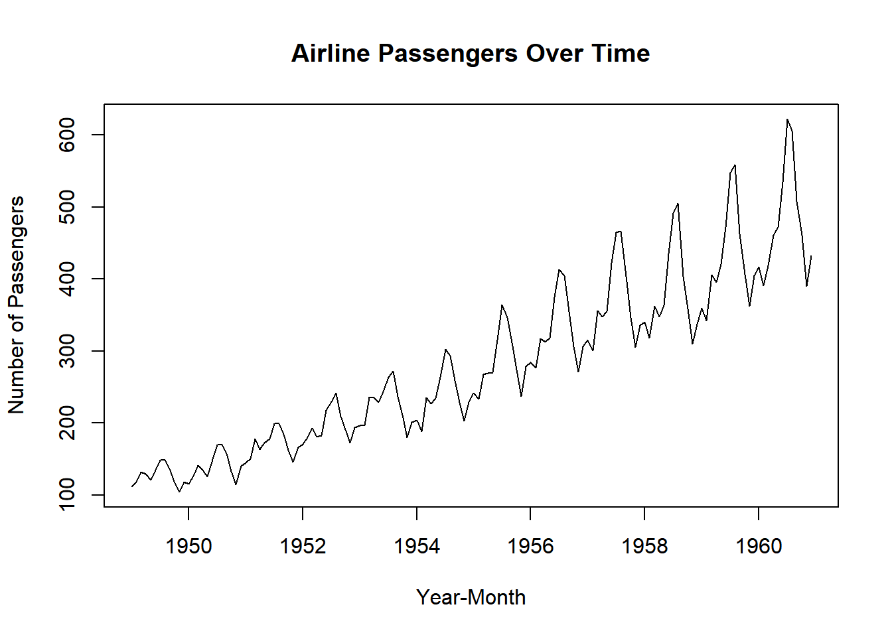
외장데이터 불러오기 (package 설치, library로 불러오기)
gapminder : 세계 여러 국가의 인구, 경제, 건강 등의 데이터를 포함
#install.packages("gapminder")
library(gapminder)
data(gapminder)
head(gapminder)# A tibble: 6 × 6
country continent year lifeExp pop gdpPercap
<fct> <fct> <int> <dbl> <int> <dbl>
1 Afghanistan Asia 1952 28.8 8425333 779.
2 Afghanistan Asia 1957 30.3 9240934 821.
3 Afghanistan Asia 1962 32.0 10267083 853.
4 Afghanistan Asia 1967 34.0 11537966 836.
5 Afghanistan Asia 1972 36.1 13079460 740.
6 Afghanistan Asia 1977 38.4 14880372 786.클릭보드(엑셀)에서 붙여넣기
datapaste 패키지 설치 -> 엑셀에서 ctrl+c -> RStudio의 Addins에서 Paste as tribble
#| eval: true
# read.csv ("D:/r/data/test.csv") ## **/** 방향 주의
# read.csv ("D:\\r\\data\\test.csv") ## **\\** 방향 주의#| eval: true
# install.packages('readxl')
# library(readxl)
# read_excel("my_file.xls")sales <- tibble::tribble(
~quarter, ~year, ~sales,
"Q1", 2000, 66013,
"Q2", NA, 69182,
"Q3", NA, 53175,
"Q4", NA, 21001,
"Q1", 2001, 46036,
"Q2", NA, 58842,
"Q3", NA, 44568,
"Q4", NA, 50197,
"Q1", 2002, 39113,
"Q2", NA, 41668,
"Q3", NA, 30144,
"Q4", NA, 52897,
"Q1", 2004, 32129,
"Q2", NA, 67686,
"Q3", NA, 31768,
"Q4", NA, 49094
)
# `fill()` defaults to replacing missing data from top to bottom
sales %>% fill(year, .direction = "down")# A tibble: 16 × 3
quarter year sales
<chr> <dbl> <dbl>
1 Q1 2000 66013
2 Q2 2000 69182
3 Q3 2000 53175
4 Q4 2000 21001
5 Q1 2001 46036
6 Q2 2001 58842
7 Q3 2001 44568
8 Q4 2001 50197
9 Q1 2002 39113
10 Q2 2002 41668
11 Q3 2002 30144
12 Q4 2002 52897
13 Q1 2004 32129
14 Q2 2004 67686
15 Q3 2004 31768
16 Q4 2004 49094head(airquality) Ozone Solar.R Wind Temp Month Day
1 41 190 7.4 67 5 1
2 36 118 8.0 72 5 2
3 12 149 12.6 74 5 3
4 18 313 11.5 62 5 4
5 NA NA 14.3 56 5 5
6 28 NA 14.9 66 5 6colSums(is.na(airquality)) Ozone Solar.R Wind Temp Month Day
37 7 0 0 0 0 airquality |>
mutate(Ozone = ifelse(is.na(Ozone), mean(Ozone, na.rm=T), Ozone),
Solar.R = ifelse(is.na(Ozone), median(Ozone, na.rm=T), Solar.R)) -> airquality2
colSums(is.na(airquality2)) Ozone Solar.R Wind Temp Month Day
0 7 0 0 0 0 pivot_longer : https://tidyr.tidyverse.org/reference/pivot_longer.html pivot_wider : https://tidyr.tidyverse.org/reference/pivot_wider.html

iris 데이터 : wide form 을 long form으로 만들기
head(iris) Sepal.Length Sepal.Width Petal.Length Petal.Width Species
1 5.1 3.5 1.4 0.2 setosa
2 4.9 3.0 1.4 0.2 setosa
3 4.7 3.2 1.3 0.2 setosa
4 4.6 3.1 1.5 0.2 setosa
5 5.0 3.6 1.4 0.2 setosa
6 5.4 3.9 1.7 0.4 setosairis |> pivot_longer(cols = Sepal.Length: Petal.Width, names_to = "measure", values_to = "value") |> head()# A tibble: 6 × 3
Species measure value
<fct> <chr> <dbl>
1 setosa Sepal.Length 5.1
2 setosa Sepal.Width 3.5
3 setosa Petal.Length 1.4
4 setosa Petal.Width 0.2
5 setosa Sepal.Length 4.9
6 setosa Sepal.Width 3 [참고 자료]https://waterfirst.quarto.pub/r_course/#/title-slide [참고 자료]https://rstudio.github.io/cheatsheets/html/data-visualization.html
ChickWeight 데이터셋:
weight: 닭의 체중 Time: 실험 시간 Chick: 닭의 고유 식별자 Diet: 실험 그룹을 나타내는 범주형 변수로, 각 닭이 어떤 종류의 식사를 받았는지를 나타냅니다.
head(ChickWeight) weight Time Chick Diet
1 42 0 1 1
2 51 2 1 1
3 59 4 1 1
4 64 6 1 1
5 76 8 1 1
6 93 10 1 1ChickWeight |> ggplot(aes(Time, weight, col=Chick, fill=Diet))+geom_point()+
geom_line()+
facet_wrap(~Diet,)+
theme(legend.position = "none")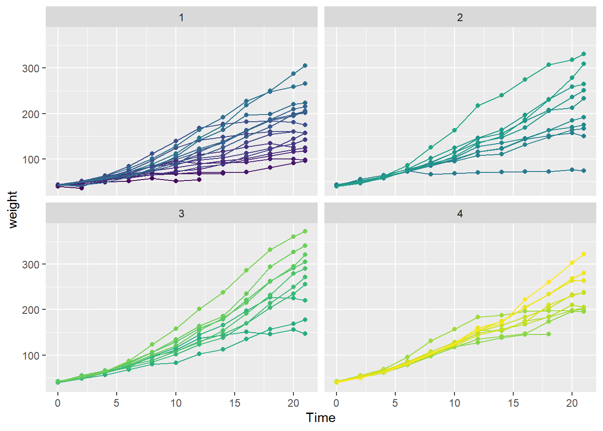
[참고자료]https://ggplot2.tidyverse.org/index.html
library(tidyverse)
ggplot(mpg, aes(cty, hwy)) +
geom_point(mapping = aes(colour = displ)) +
geom_smooth(formula = y ~ x, method = "lm") +
scale_colour_viridis_c() +
facet_grid(year ~ drv) +
coord_fixed() +
theme_minimal() +
theme(panel.grid.minor = element_blank())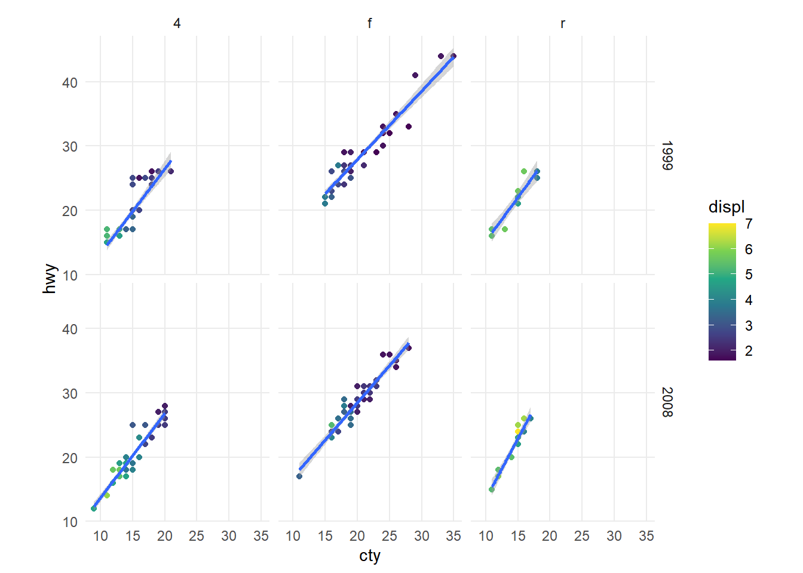
library(RColorBrewer)
display.brewer.all()
사용법 :
scale_fill_brewer(palette=“Set1”)
scale_colour_brewer(palette=“Set1”)
[Color Pick Up](https://r-graph-gallery.com/ggplot2-color.html)
[Colorspace 패키지](https://m.blog.naver.com/regenesis90/222234511150)
[Sci-Fi](https://cran.r-project.org/web/packages/ggsci/vignettes/ggsci.html)
[참고자료]https://r-charts.com/ranking/bar-plot-ggplot2/
# install.packages("ggplot2")
library(ggplot2)
df <- data.frame(group = c("A", "B", "C"),
count = c(3, 5, 6))
ggplot(df, aes(x = group, y = count)) +
geom_bar(stat = "identity") +
geom_text(aes(label = count), vjust = -1, colour = "black") +
ylim(c(0, 6.5)) # Increase the limits of the Y-axis if needed 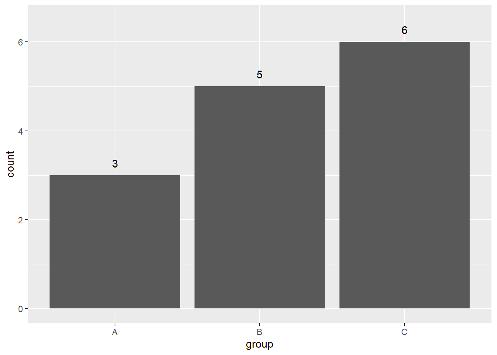
# install.packages("ggplot2")
library(ggplot2)
ggplot(df, aes(x = group, y = count)) +
geom_col() 
[참고자료]https://ggplot2.tidyverse.org/reference/geom_boxplot.html
ggplot(mpg, aes(class, hwy)) + geom_boxplot(aes(colour = drv))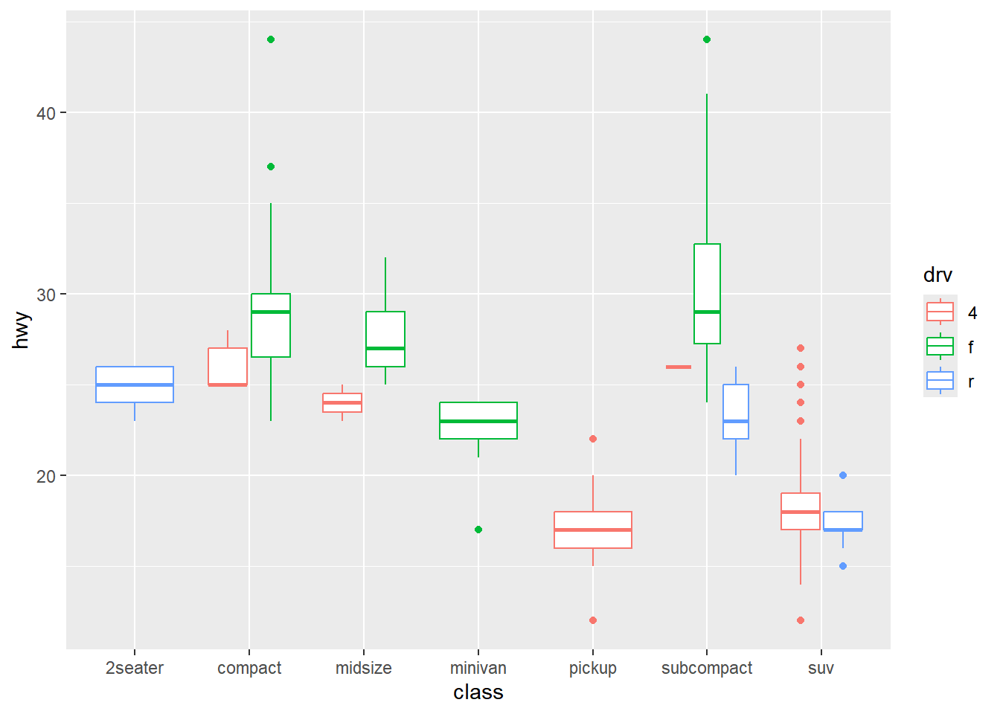
[참고자료]https://r-charts.com/es/distribucion/grafico-violin-grupo-ggplot2/
# install.packages("ggplot2")
library(ggplot2)
ggplot(warpbreaks, aes(x = tension, y = breaks, fill = tension)) +
geom_violin(trim = FALSE) +
geom_boxplot(width = 0.07) 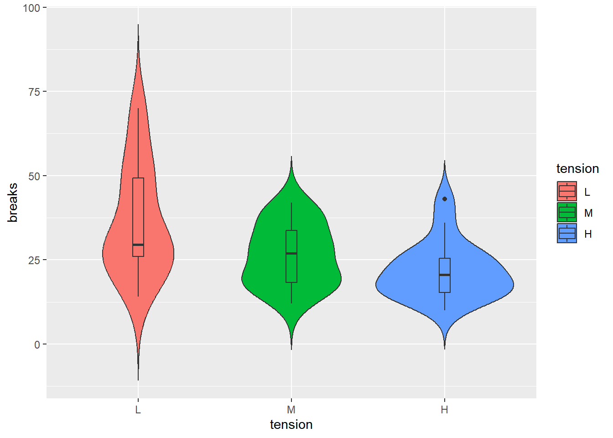
[참고자료]https://r-charts.com/es/distribucion/grafico-densidad-grupo-ggplot2/
# Datos
set.seed(5)
x <- c(rnorm(200, mean = -2, 1.5),
rnorm(200, mean = 0, sd = 1),
rnorm(200, mean = 2, 1.5))
grupo <- c(rep("A", 200), rep("B", 200), rep("C", 200))
df <- data.frame(x, grupo)
# install.packages("ggplot2")
library(ggplot2)
cols <- c("#F76D5E", "#FFFFBF", "#72D8FF")
# Gráfico de densidad en ggplot2
ggplot(df, aes(x = x, fill = grupo)) +
geom_density(alpha = 0.7) +
scale_fill_manual(values = cols) 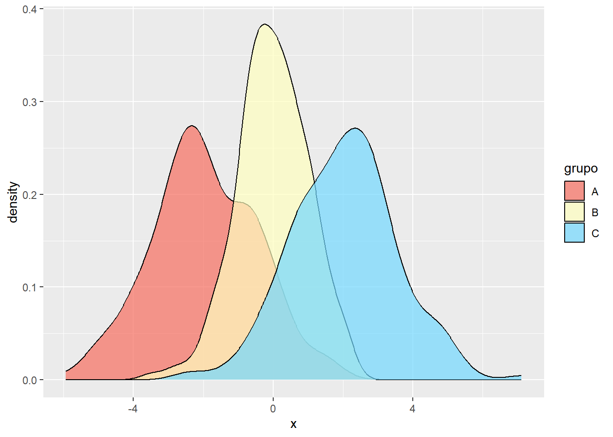
[참고자료]https://r-charts.com/es/correlacion/ggpairs/
# install.packages("GGally")
library(GGally)
ggpairs(iris) 
# install.packages("GGally")
library(GGally)
ggpairs(iris, columns = 1:4, aes(color = Species, alpha = 0.5),
upper = list(continuous = "points")) 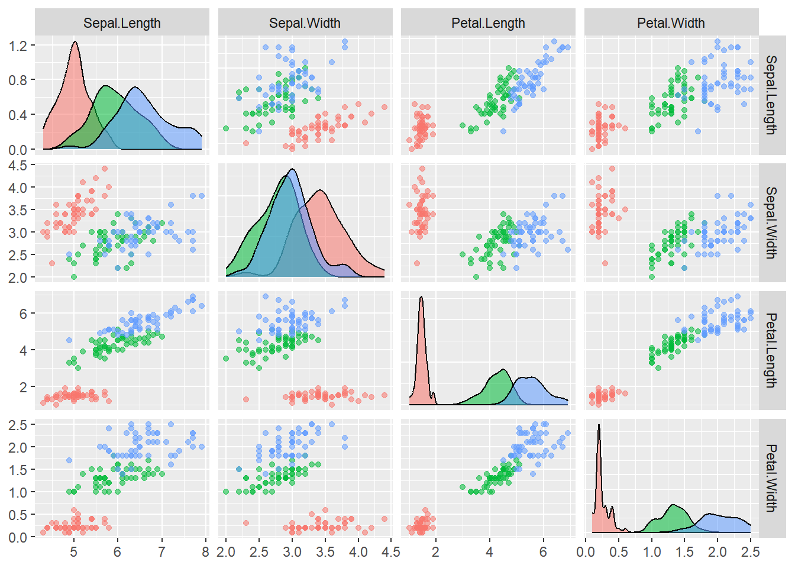
[참고자료]https://r-charts.com/es/flujo/diagrama-sankey-ggplot2/
# install.packages("remotes")
# remotes::install_github("davidsjoberg/ggsankey")
library(ggsankey)
df <- mtcars %>%
make_long(cyl, vs, am, gear, carb)
# install.packages("remotes")
# remotes::install_github("davidsjoberg/ggsankey")
library(ggsankey)
# install.packages("ggplot2")
library(ggplot2)
# install.packages("dplyr")
library(dplyr) # Necesario
ggplot(df, aes(x = x,
next_x = next_x,
node = node,
next_node = next_node,
fill = factor(node),
label = node)) +
geom_sankey(flow.alpha = 0.5, node.color = 1) +
geom_sankey_label(size = 3.5, color = 1, fill = "white") +
scale_fill_viridis_d() +
theme_sankey(base_size = 16) +
theme(legend.position = "none") 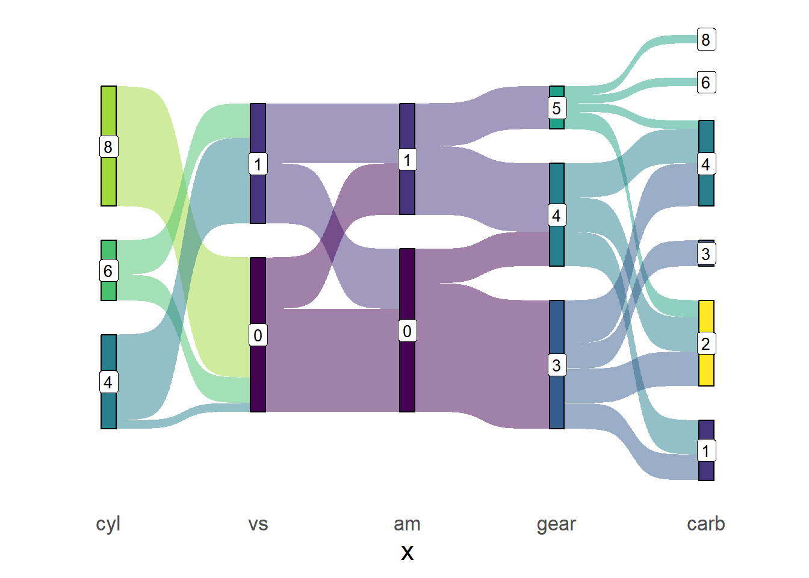
[참고자료]https://r-charts.com/es/parte-todo/ggparliament/
# install.packages("ggparliament")
library(ggparliament)
# install.packages("tidyverse")
library(tidyverse)
# Datos
ru <- election_data %>%
filter(country == "Russia" & year == 2016)
# Data frame a ser usado
ru_semicircle <- parliament_data(election_data = ru,
type = "semicircle", # Tipo de parlamento
parl_rows = 10, # Número de filas del parlamento
party_seats = ru$seats) # Asientos por partido
ggplot(ru_semicircle, aes(x = x, y = y, colour = party_short)) +
geom_parliament_seats() +
theme_ggparliament() +
labs(title = "Rusia, 2016") +
scale_colour_manual(values = ru_semicircle$colour,
limits = ru_semicircle$party_short) 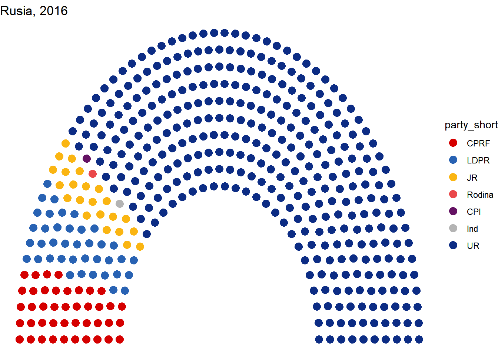
대한민국 22대 국회의원 의석수를 표시하시오 https://open.assembly.go.kr/portal/assm/assmPartyNegotiationPage.do [color hexacode]https://htmlcolorcodes.com/
library(ggparliament)
df <- tibble::tribble(
~번호, ~전국, ~정당, ~명,
1L, "지역구", "더불어민주당", 161L,
2L, "지역구", "국민의힘", 90L,
3L, "지역구", "새로운미래", 1L,
4L, "지역구", "개혁신당", 1L,
5L, "지역구", "진보당", 1L,
6L, "비례", "더불어민주연합", 14L,
7L, "비례", "국민의미래", 18L,
8L, "비례", "개혁신당", 2L,
9L, "비례", "조국혁신당", 12L
) |>
mutate(no = c(1,3,4,2,9,6,7,8,5))
df_semicircle <- parliament_data(election_data = df,
type = "semicircle",
parl_rows = 10,
party_seats = df$명)
ggplot(df_semicircle, aes(x = x, y = y, colour =fct_reorder(정당, -명))) +
geom_parliament_seats() +
theme_ggparliament() +
labs(title = "South Korea, 2024") +
scale_colour_manual(values = c("#0000FF", "#FF0000",
"#FF0000", "#0000FF",
"#0073CF", "#FFB233",
"#33FF42", "#E333FF"))
#create data frame
df <- data.frame(team=c('A', 'A', 'A', 'A', 'B', 'B', 'B', 'B'),
position=c('G', 'G', 'F', 'F', 'G', 'G', 'G', 'G'),
points=c(8, 14, 20, 22, 25, 29, 30, 31),
assists=c(10, 5, 5, 3, 8, 6, 9, 12))
ggplot(df, aes(assists, points)) +
geom_point() +
facet_grid(position~team)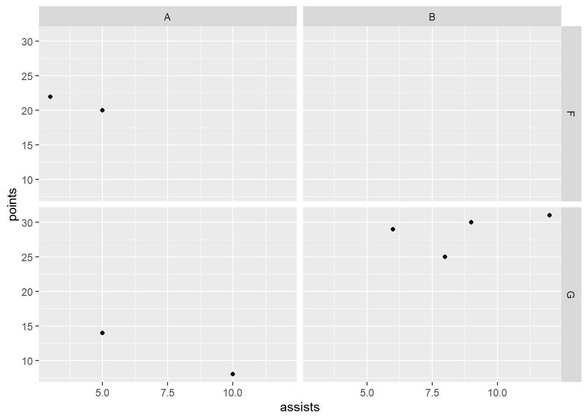
ggplot(df, aes(assists, points)) +
geom_point() +
facet_wrap(position~team)
library(patchwork)
p1 <- ggplot(mtcars) + geom_point(aes(mpg, disp))
p2 <- ggplot(mtcars) + geom_boxplot(aes(gear, disp, group = gear))
p1 + p2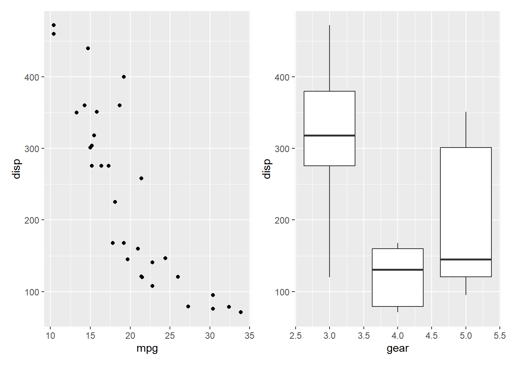
p3 <- ggplot(mtcars) + geom_smooth(aes(disp, qsec))
p4 <- ggplot(mtcars) + geom_bar(aes(carb))
(p1 | p2 | p3) /
p4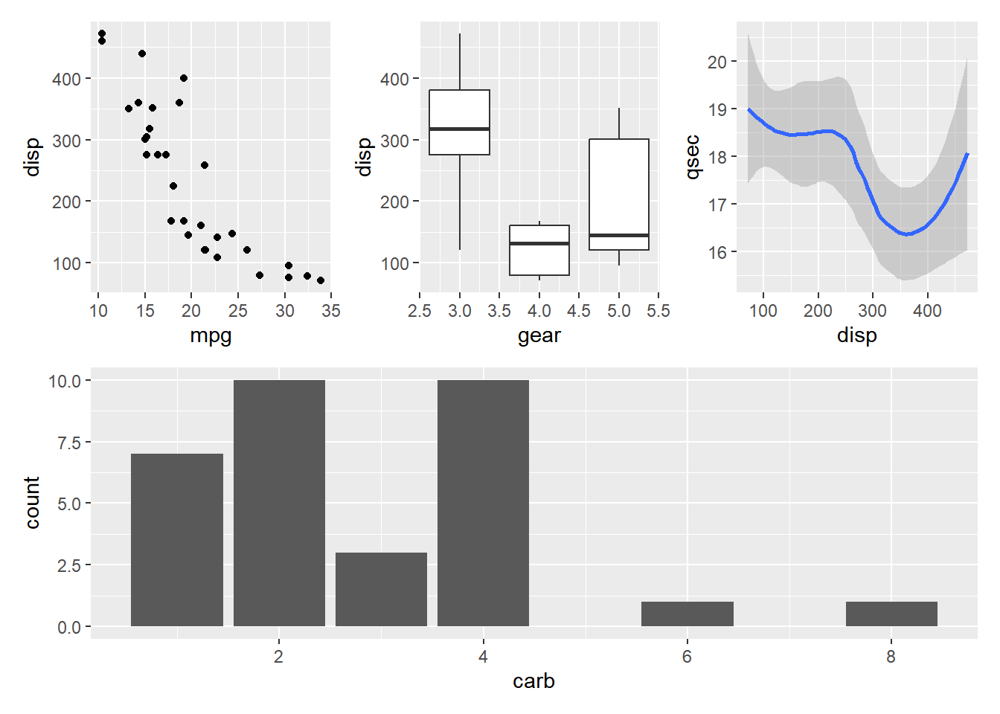
theme_Publication <- function(base_size=14, base_family="helvetica") {
library(grid)
library(ggthemes)
(theme_foundation(base_size=base_size, base_family=base_family)
+ theme(plot.title = element_text(face = "bold",
size = rel(1.2), hjust = 0.5),
text = element_text(),
panel.background = element_rect(colour = NA),
plot.background = element_rect(colour = NA),
panel.border = element_rect(colour = NA),
axis.title = element_text(face = "bold",size = rel(1)),
axis.title.y = element_text(angle=90,vjust =2),
axis.title.x = element_text(vjust = -0.2),
axis.text = element_text(),
axis.line = element_line(colour="black"),
axis.ticks = element_line(),
panel.grid.major = element_line(colour="#f0f0f0"),
panel.grid.minor = element_blank(),
legend.key = element_rect(colour = NA),
legend.position = "bottom",
legend.direction = "horizontal",
legend.key.size= unit(0.2, "cm"),
legend.margin = unit(0, "cm"),
legend.title = element_text(face="italic"),
plot.margin=unit(c(10,5,5,5),"mm"),
strip.background=element_rect(colour="#f0f0f0",fill="#f0f0f0"),
strip.text = element_text(face="bold")
))
}
scale_fill_Publication <- function(...){
library(scales)
discrete_scale("fill","Publication",manual_pal(values = c("#386cb0","#fdb462","#7fc97f","#ef3b2c","#662506","#a6cee3","#fb9a99","#984ea3","#ffff33")), ...)
}
scale_colour_Publication <- function(...){
library(scales)
discrete_scale("colour","Publication",manual_pal(values = c("#386cb0","#fdb462","#7fc97f","#ef3b2c","#662506","#a6cee3","#fb9a99","#984ea3","#ffff33")), ...)
}library(ggplot2)
library(ggrepel)
library(dplyr)
temp.dat <- structure(list(Year = c("2003", "2004", "2005", "2006", "2007",
"2008", "2009", "2010", "2011", "2012", "2013", "2014", "2003",
"2004", "2005", "2006", "2007", "2008", "2009", "2010", "2011",
"2012", "2013", "2014", "2003", "2004", "2005", "2006", "2007",
"2008", "2009", "2010", "2011", "2012", "2013", "2014", "2003",
"2004", "2005", "2006", "2007", "2008", "2009", "2010", "2011",
"2012", "2013", "2014"), State = structure(c(1L, 1L, 1L, 1L,
1L, 1L, 1L, 1L, 1L, 1L, 1L, 1L, 2L, 2L, 2L, 2L, 2L, 2L, 2L, 2L,
2L, 2L, 2L, 2L, 3L, 3L, 3L, 3L, 3L, 3L, 3L, 3L, 3L, 3L, 3L, 3L,
4L, 4L, 4L, 4L, 4L, 4L, 4L, 4L, 4L, 4L, 4L, 4L), .Label = c("VIC",
"NSW", "QLD", "WA"), class = "factor"), Capex = c(5.35641472365348,
5.76523240652641, 5.24727577535625, 5.57988239709746, 5.14246402568366,
4.96786288162828, 5.493190785287, 6.08500616799372, 6.5092228474591,
7.03813541623157, 8.34736513875897, 9.04992300432169, 7.15830329914056,
7.21247045701994, 7.81373928617117, 7.76610217197542, 7.9744994967006,
7.93734452080786, 8.29289899132255, 7.85222269563982, 8.12683746325074,
8.61903784301649, 9.7904327253813, 9.75021175267288, 8.2950673974226,
6.6272705639724, 6.50170524635367, 6.15609626379471, 6.43799637295979,
6.9869551384028, 8.36305663640294, 8.31382617231745, 8.65409824343971,
9.70529678167458, 11.3102788081848, 11.8696420977237, 6.77937303542605,
5.51242844820827, 5.35789621712839, 4.38699327451101, 4.4925792218211,
4.29934654081527, 4.54639175257732, 4.70040615159951, 5.04056109514957,
5.49921208937735, 5.96590909090909, 6.18700407463007)), class = "data.frame", row.names = c(NA,
-48L), .Names = c("Year", "State", "Capex"))
head(temp.dat) Year State Capex
1 2003 VIC 5.356415
2 2004 VIC 5.765232
3 2005 VIC 5.247276
4 2006 VIC 5.579882
5 2007 VIC 5.142464
6 2008 VIC 4.967863library(ggplot2)
library(ggrepel)
library(dplyr)
p <- temp.dat %>%
mutate(label = if_else(Year == max(Year), as.character(State), NA_character_)) %>%
ggplot(aes(x = Year, y = Capex, group = State, colour = State, shape=State)) +
geom_line() + geom_point()+
geom_label_repel(aes(label = label),
nudge_x = 1,
na.rm = TRUE)+
scale_colour_Publication()+ theme_Publication()+
theme(legend.position = "none")
p
library(plotly)
ggplotly(p)p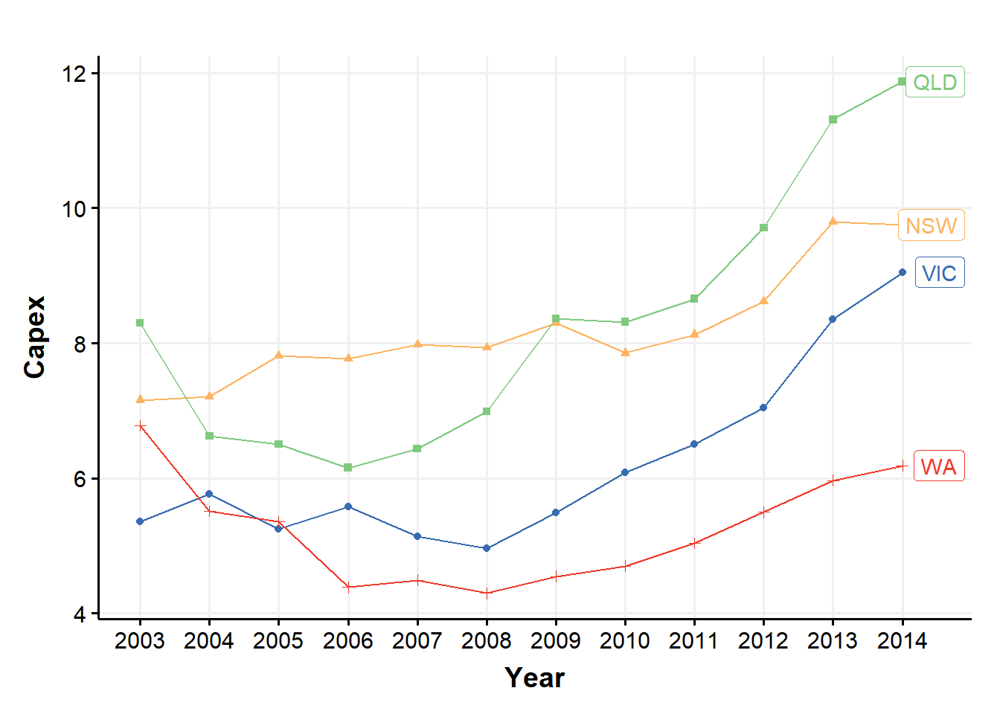
ggsave("myplot.png")
p2 <- ggplotly(p)
htmlwidgets::saveWidget(p2, "myplot.html")아래 사이트에서 포토 코팅/노광/현상 시간에 따른 2종의 PR 의 CD를 분석하라.
[Kaggle site]https://www.kaggle.com/datasets/waterfirst/photolithography-process-data
1. penquin 데이터의 행번호를 id 열로 만들어라 (mutate)
2. penquin 데이터의 1행~300행까지 데이터를 train으로 만들고, bill_depth 열을 제외하고 X_train, id와 bill_depth 열을 이용하여 y_train을 만들어라
3. penquin 데이터의 300행~마지막행까지 데이터를 test 로 만들고, bill_depth 열을 제외하고 y_train, id와 bill_depth 열을 이용하여 y_test을 만들어라.
4. X_train, y_train 으로 모델링을 한 후, X_test를 이용하여 y_test의 bill_depth를 예측하라.
5. 예측한 값을 "수험번호.csv" 파일로 제출하라.library(dplyr)
library(caret)
library(ModelMetrics)
library(randomForest)
library(palmerpenguins)## 데이터 불러오기 (실제 시험장에서는 아래와 같이 간단하게 불러옴)
#X_train <- read.csv("../input/.../X_train.csv", stringsAsFactors=T)
#y_train <- read.csv("../input/.../y_train.csv", stringsAsFactors=T)
#X_test <- read.csv("../input/.../X_test.csv", stringsAsFactors=T)
#y_test <- read.csv("../input/.../y_test.csv", stringsAsFactors=T)
#penquin 데이터를 이용하여 데이터 train, test 데이터 만들기
penguins <- penguins %>% mutate(id=1:nrow(penguins)) |>
rename(bill_depth = bill_depth_mm,
bill_length = bill_length_mm ,
flipper_length = flipper_length_mm,
body_mass = body_mass_g )
X_train <- penguins[1:300, -4]
y_train <- penguins[1:300, c(4,9)]
X_test <- penguins[301:344, -4]
y_test <- penguins[301:344, c(4,9)]
y_test[,1] <- 0train<-inner_join(y_train, X_train, by="id")
str(train)tibble [300 × 9] (S3: tbl_df/tbl/data.frame)
$ bill_depth : num [1:300] 18.7 17.4 18 NA 19.3 20.6 17.8 19.6 18.1 20.2 ...
$ id : int [1:300] 1 2 3 4 5 6 7 8 9 10 ...
$ species : Factor w/ 3 levels "Adelie","Chinstrap",..: 1 1 1 1 1 1 1 1 1 1 ...
$ island : Factor w/ 3 levels "Biscoe","Dream",..: 3 3 3 3 3 3 3 3 3 3 ...
$ bill_length : num [1:300] 39.1 39.5 40.3 NA 36.7 39.3 38.9 39.2 34.1 42 ...
$ flipper_length: int [1:300] 181 186 195 NA 193 190 181 195 193 190 ...
$ body_mass : int [1:300] 3750 3800 3250 NA 3450 3650 3625 4675 3475 4250 ...
$ sex : Factor w/ 2 levels "female","male": 2 1 1 NA 1 2 1 2 NA NA ...
$ year : int [1:300] 2007 2007 2007 2007 2007 2007 2007 2007 2007 2007 ...str(X_test)tibble [44 × 8] (S3: tbl_df/tbl/data.frame)
$ species : Factor w/ 3 levels "Adelie","Chinstrap",..: 2 2 2 2 2 2 2 2 2 2 ...
$ island : Factor w/ 3 levels "Biscoe","Dream",..: 2 2 2 2 2 2 2 2 2 2 ...
$ bill_length : num [1:44] 46.7 52 50.5 49.5 46.4 52.8 40.9 54.2 42.5 51 ...
$ flipper_length: int [1:44] 195 197 200 200 191 205 187 201 187 203 ...
$ body_mass : int [1:44] 3300 4150 3400 3800 3700 4550 3200 4300 3350 4100 ...
$ sex : Factor w/ 2 levels "female","male": 1 2 1 2 1 2 1 2 1 2 ...
$ year : int [1:44] 2007 2007 2008 2008 2008 2008 2008 2008 2008 2008 ...
$ id : int [1:44] 301 302 303 304 305 306 307 308 309 310 ...# id 열 제거하기
train<- train[,-2]
test<-X_test[,-8]
# na 가 있는 열 확인하기
colSums(is.na(train)) bill_depth species island bill_length flipper_length
2 0 0 2 2
body_mass sex year
2 11 0 colSums(is.na(test)) species island bill_length flipper_length body_mass
0 0 0 0 0
sex year
0 0 # na 가 있는 열 제거하기
train<- train %>% na.omit()
test<- test %>% na.omit()#훈련/검증 데이터 70:30 으로 나누기
idx<-createDataPartition(train$bill_depth, p=0.7, list=F)
train_df<-train[idx,]
test_df<-train[-idx,]m1<-train(bill_depth~., data=train_df, method="glm") #로지스틱 회귀 모델
m2<-randomForest(bill_depth~., data=train_df, ntree=100) #랜덤포레스트 모델p1<-predict(m1, test_df)
p2<-predict(m2, test_df)caret::R2(test_df$bill_depth, p1) #로지스틱 회귀분석[1] 0.8584873caret::R2(test_df$bill_depth, p2) #랜덤포레스트[1] 0.8600617## 랜덤포레스트 모델로 최종 모델링 하기
m<-randomForest(bill_depth~., data=train, ntree=100)
p<-predict(m, test)## p값을 문자열로 바꾸고 csv 파일로 제출하기
p<-as.character(p)
y_test$species <- p
write.csv(y_test, "1234.csv", row.names=F)
## 제출된 값 다시 한번 확인하기
abc<-read.csv("1234.csv")
head(abc) bill_depth id species
1 0 301 18.09608
2 0 302 19.18256
3 0 303 18.15882
4 0 304 18.99137
5 0 305 18.00220
6 0 306 18.22539[DATA]https://www.kaggle.com/datasets/kukuroo3/used-car-price-dataset-competition-format/versions/1
1. penquin 데이터의 행번호를 id 열로 만들어라 (mutate)
2. penquin 데이터의 1행~300행까지 데이터를 train으로 만들고, bill_depth 열을 제외하고 X_train, id와 bill_depth 열을 이용하여 y_train을 만들어라
3. penquin 데이터의 300행~마지막행까지 데이터를 test 로 만들고, bill_depth 열을 제외하고 y_train, id와 bill_depth 열을 이용하여 y_test을 만들어라.
4. X_train, y_train 으로 모델링을 한 후, X_test를 이용하여 y_test의 bill_depth를 예측하라.
5. 예측한 값을 "수험번호.csv" 파일로 제출하라.library(dplyr)
library(caret)
library(ModelMetrics)
library(randomForest)## 데이터 불러오기 (실제 시험장에서는 아래와 같이 간단하게 불러옴)
#X_train <- read.csv("../input/.../X_train.csv", stringsAsFactors=T)
#y_train <- read.csv("../input/.../y_train.csv", stringsAsFactors=T)
#X_test <- read.csv("../input/.../X_test.csv", stringsAsFactors=T)
#y_test <- read.csv("../input/.../y_test.csv", stringsAsFactors=T)
#penquin 데이터를 이용하여 데이터 train, test 데이터 만들기
rm(list=ls())
penguins <- penguins %>% mutate(id=1:nrow(penguins)) |>
rename(bill_depth = bill_depth_mm,
bill_length = bill_length_mm ,
flipper_length = flipper_length_mm,
body_mass = body_mass_g )
X_train <- penguins[1:300, -1]
y_train <- penguins[1:300, c(1,9)]
X_test <- penguins[301:344, -1]
y_test <- penguins[301:344, c(1,9)]
y_test[,1] <- 0train<-inner_join(y_train, X_train, by="id")
str(train)tibble [300 × 9] (S3: tbl_df/tbl/data.frame)
$ species : Factor w/ 3 levels "Adelie","Chinstrap",..: 1 1 1 1 1 1 1 1 1 1 ...
$ id : int [1:300] 1 2 3 4 5 6 7 8 9 10 ...
$ island : Factor w/ 3 levels "Biscoe","Dream",..: 3 3 3 3 3 3 3 3 3 3 ...
$ bill_length : num [1:300] 39.1 39.5 40.3 NA 36.7 39.3 38.9 39.2 34.1 42 ...
$ bill_depth : num [1:300] 18.7 17.4 18 NA 19.3 20.6 17.8 19.6 18.1 20.2 ...
$ flipper_length: int [1:300] 181 186 195 NA 193 190 181 195 193 190 ...
$ body_mass : int [1:300] 3750 3800 3250 NA 3450 3650 3625 4675 3475 4250 ...
$ sex : Factor w/ 2 levels "female","male": 2 1 1 NA 1 2 1 2 NA NA ...
$ year : int [1:300] 2007 2007 2007 2007 2007 2007 2007 2007 2007 2007 ...str(X_test)tibble [44 × 8] (S3: tbl_df/tbl/data.frame)
$ island : Factor w/ 3 levels "Biscoe","Dream",..: 2 2 2 2 2 2 2 2 2 2 ...
$ bill_length : num [1:44] 46.7 52 50.5 49.5 46.4 52.8 40.9 54.2 42.5 51 ...
$ bill_depth : num [1:44] 17.9 19 18.4 19 17.8 20 16.6 20.8 16.7 18.8 ...
$ flipper_length: int [1:44] 195 197 200 200 191 205 187 201 187 203 ...
$ body_mass : int [1:44] 3300 4150 3400 3800 3700 4550 3200 4300 3350 4100 ...
$ sex : Factor w/ 2 levels "female","male": 1 2 1 2 1 2 1 2 1 2 ...
$ year : int [1:44] 2007 2007 2008 2008 2008 2008 2008 2008 2008 2008 ...
$ id : int [1:44] 301 302 303 304 305 306 307 308 309 310 ...# id 열 제거하기
train<- train[,-2]
test<-X_test[,-8]
# na 가 있는 열 확인하기
colSums(is.na(train)) species island bill_length bill_depth flipper_length
0 0 2 2 2
body_mass sex year
2 11 0 colSums(is.na(test)) island bill_length bill_depth flipper_length body_mass
0 0 0 0 0
sex year
0 0 # na 가 있는 열 제거하기
train<- train %>% na.omit()
test<- test %>% na.omit()#훈련/검증 데이터 70:30 으로 나누기
idx<-createDataPartition(train$species, p=0.7, list=F)
train_df<-train[idx,]
test_df<-train[-idx,]m1<-train(species~., data=train_df, method="rpart") #의사결정나무 모델
m2<-randomForest(species~., data=train_df, ntree=100) #랜덤포레스트 모델p1<-predict(m1, test_df)
p2<-predict(m2, test_df)caret::confusionMatrix(test_df$species, p1)$overall[1] #의사결정나무/accuracy Accuracy
0.9647059 caret::confusionMatrix(test_df$species, p1)$byClass[7] #의사결정나무/F1[1] 0.9534884caret::confusionMatrix(test_df$species, p2)$overall[1] #랜덤포레스트/accuracyAccuracy
1 caret::confusionMatrix(test_df$species, p2)$byClass[7] #랜덤포레스트/F1[1] 1## 랜덤포레스트 모델로 최종 모델링 하기
m<-randomForest(species~., data=train, ntree=100)
p<-predict(m, test)## p값을 문자열로 바꾸고 csv 파일로 제출하기
p<-as.character(p)
y_test$species <- p
write.csv(y_test, "1234.csv", row.names=F)
## 제출된 값 다시 한번 확인하기
abc<-read.csv("1234.csv")
head(abc) species id
1 Chinstrap 301
2 Chinstrap 302
3 Chinstrap 303
4 Chinstrap 304
5 Chinstrap 305
6 Adelie 306[DATA]https://www.kaggle.com/datasets/kukuroo3/hr-data-predict-change-jobscompetition-form/versions/1